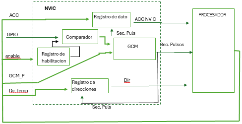
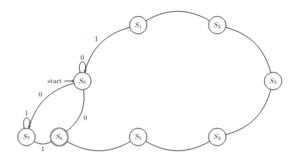
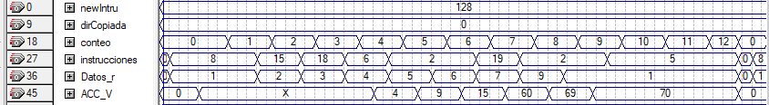

Diseño e integración de un controlador de interrupciones tipo NVIC en un microprocesador de 8 bits desarrollado en VHDL. El proyecto implicó modificaciones en la unidad de control, implementación de guardado y restauración de contexto (PC y ACC), extensión del conjunto de instrucciones y validación funcional mediante simulación en Quartus.
Arquitectura del Sistema
El sistema se compone de tres bloques principales: Procesador, NVIC y GPIO. El NVIC actúa como controlador de interrupciones, coordinando la pausa del procesador y la restauración del contexto.



El diagrama izquierdo muestra la arquitectura interna del procesador (ALU, PC, ACC, GCM y buses). El diagrama central representa el NVIC con su arquitectura de control y almacenamiento de contexto. El diagrama derecho ilustra el GPIO.
Problema Técnico
El procesador original no contaba con soporte para interrupciones externas. Se requería implementar un mecanismo capaz de:
- Detectar eventos externos mediante GPIO
- Detener la ejecución sin pérdida de contexto
- Guardar PC + 1 y ACC
- Ejecutar una rutina de servicio
- Restaurar completamente el estado previo
Diseño del NVIC
El NVIC fue implementado como una máquina de estados finitos (FSM) de 8 estados.
- Pausar la Máquina de Control General (GCM)
- Respaldar el valor del ACC
- Guardar la dirección del PC incrementada
- Cargar la dirección de la rutina de interrupción
- Restaurar el contexto al finalizar

La señal de pausa fue implementada utilizando registros tipo T.
Diseño del GPIO
El GPIO fue desarrollado como módulo configurable en modo entrada o salida.

Durante la simulación se detectaron problemas de alta impedancia, resueltos mediante un rediseño de la arquitectura interna.
Extensión del ISA
- Habilitar y deshabilitar interrupciones
- Limpiar bandera de interrupción
- Configurar GPIO como entrada o salida
- Habilitar o deshabilitar el reloj del GPIO
Validación
Se realizaron simulaciones funcionales para verificar el comportamiento del sistema en distintos modos de operación del GPIO y durante la ejecución de interrupciones.
GPIO configurado como Entrada

En esta simulación el GPIO se configura como entrada. Se observa cómo el valor leído desde el GPIO (60) es cargado al procesador y posteriormente se suma con el valor 9 almacenado en la memoria de datos, obteniendo como resultado el valor 69.
GPIO configurado como Salida

En este escenario el GPIO se configura como salida, permitiendo mostrar en sus pines el contenido del registro acumulador (ACC). Se puede observar que las señales de salida del ACC y del GPIO coinciden una vez realizada la configuración del periférico.
Ejecución de Interrupción

Finalmente, el GPIO se configura nuevamente como entrada y se habilita el mecanismo de interrupción. Durante la activación de la interrupción se observa el almacenamiento de la dirección PC + 1 junto con el contenido del registro ACC, permitiendo ejecutar la rutina de servicio sin perder el estado del programa principal.
Una vez finalizada la rutina de interrupción, el sistema restaura correctamente el contexto del procesador y continúa la ejecución normal del programa.
Tecnologías Utilizadas
- VHDL (RTL)
- Intel Quartus
- Diseño de máquinas de estados
- Arquitectura de CPU
- Simulación funcional
Conclusión
En este proyecto fue fundamental seguir un proceso de diseño estructurado. El uso de diagramas de bloques y máquinas de estados permitió describir de forma clara la arquitectura del sistema y facilitar la comprensión del funcionamiento del controlador de interrupciones.
El desarrollo e integración de los módulos NVIC y GPIO en el microprocesador permitió profundizar en conceptos de arquitectura digital a bajo nivel, incluyendo el manejo de interrupciones, el guardado y restauración de contexto, y la coordinación entre periféricos y la unidad de control.
Además de fortalecer el entendimiento del diseño RTL en VHDL, este proyecto proporcionó experiencia en metodologías de desarrollo y documentación de sistemas digitales, habilidades clave para el diseño de futuros sistemas embebidos y arquitecturas de procesador.
Documentación del Proyecto
Si deseas revisar el desarrollo completo del proyecto, incluyendo la arquitectura detallada, diagramas de estados, descripción del ISA y resultados de simulación, puedes consultar el documento técnico completo.
El documento incluye la descripción completa del diseño, diagramas de arquitectura, simulaciones funcionales y explicaciones detalladas del funcionamiento del sistema.